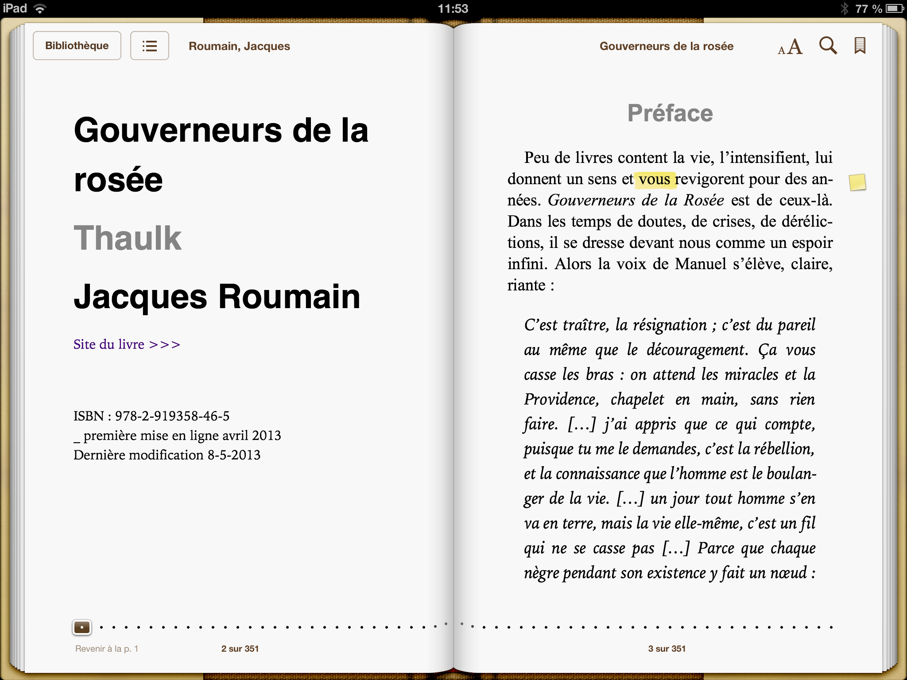
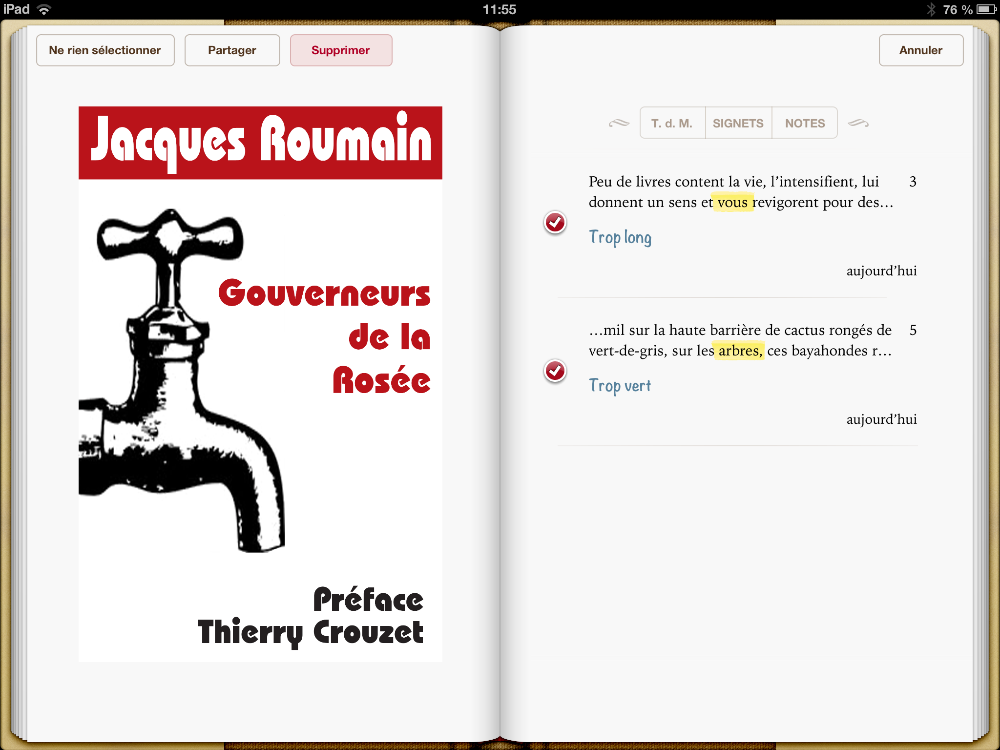

Partager ses notes de lecture sur iPad/iPhone
Chaque fois que j’envoie un epub à mes amis pour relecture, corrections, critiques, le problème du retour des notes se pose. Sous Word, on a le mode correction pour ça. Il nous manque cruellement sur les applis de lecture. Je viens de constater qu’on peut s’en tirer tant bien que mal depuis l’application iBooks d’Apple.
- Une fois vos annotations achevées, cliquez sur le bouton
sommaire, en haut à gauche.
eBooks
- Affichez le sommaire des notes.
 exp4
exp4 - Cliquez en haut à droite sur le bouton faire suivre et
choisissez « Modifier les notes ».
 exp3
exp3 - En haut à gauche, cliquez sur « Tout sélec. ».
- Cliquez sur « Partager » et envoyez par mail.
exp2
- Attention, le mail n’est réellement lisible que sur une
messagerie Apple. Sur Gmail, les surbrillances n’apparaissent pas.
 eBooks
eBooks - Pour envoyer un doc lisible hors du monde iOS, convertissez-le en PDF. Directement depuis un iPad/iPhone avec une appli comme PDF printer for iPad.
Suite | 2013 | Sommaire | Texte publié dimanche 21 juillet 2013